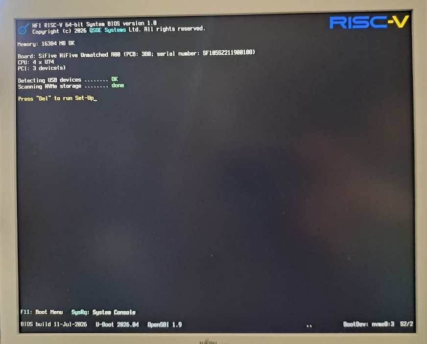
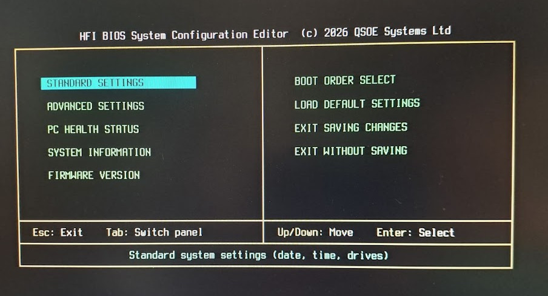

What is it?
Harmonic Firmware Initiative (HFI) aims to create, standardize, and maintain — for RISC-V systems — something the x86 world has taken for granted for forty years: a genuine power-on firmware experience. You switch the machine on and it presents itself on its own display — a firmware identity and POST screen, hardware enumeration, a Set-Up configuration editor, and boot selection — the way every PC has since the 1980s, and the way no bare RISC-V board does today.
HFI is that effort itself: the vision, the design decisions, and the coordination. It defines the approach, standardizes the interface board makers build to, maintains a reference implementation, and spreads the know-how. The software it produces has its own name — HFI BIOS — and the screen below is what that software draws.
RISC-VHFI RISC-V 64-bit System BIOS version 1.0
Copyright (c) 2026 QSOE Systems. All rights reserved.
Board: SiFive HiFive Unmatched (FU740)
Memory: 16384 MB OK
Detecting USB devices ........ OK
Scanning NVMe storage ........ done
Press DEL to run Set-Up
The software
HFI BIOS
The initiative's reference software is HFI BIOS, in full HFI RISC-V 64-bit System BIOS. It is a firmware experience layer built as an extension of U-Boot, not a replacement for it — it reads the machine through U-Boot's own subsystems and draws it on the board's own display.
Without a layer like this, a RISC-V board is in effect headless: switch it on and the monitor stays dark while the firmware talks only down a serial cable to a second computer. HFI BIOS gives it instead what a PC has always shown on its own screen — a power-on identity and POST screen, boot-device and boot-order menus, a Set-Up configuration editor in the idiom of a classic system BIOS, and a system console underneath for the moments you want the prompt.
Isn't that what UEFI is for? In a sense, yes — UEFI, in its open TianoCore (EDK II) form, offers a comparable Set-Up screen and boot manager, and it is the road the x86 world took. But it is an entire second firmware environment, large and heavy, and it does not sit neatly inside the U-Boot that RISC-V boards already run. HFI BIOS takes the opposite path: not a massive stack bolted alongside U-Boot, but a small layer that extends the U-Boot already there.
Harmonization
The unified VideoBIOS interface
HFI BIOS drives each board's display through a single, unified interface — the IBM PC's option-ROM idea, brought to RISC-V. On the PC that code lived in a ROM chip on the graphics card; here it lives on the storage the board already carries, on MMC or NVMe.
Port that interface once for a display controller, and every board that uses it inherits the whole experience above — unchanged.
That is the harmonization the name points to: one interface, many boards, and the same firmware experience carried forward to the next SoC.
Operating system · the boot target
HFI BIOS · POST · menus · Set-Up · console
Unified VideoBIOS interface · on MMC / NVMe — the contract
U-Boot · OpenSBI
Board silicon · CPU · PCIe · display controller · storage
Running today
The hardest case, first
The reference implementation runs on a SiFive HiFive Unmatched, driving its display through a discrete NVIDIA GK-208 over PCIe — brought up natively inside U-Boot, with no legacy VGA and no x86 assumptions. It is the hardest case on purpose: if a scavenged Kepler card can present a coherent BIOS on RISC-V, a board with an integrated display controller is the easy one.

What HFI BIOS v1.0 puts on the screen today:
- A power-on greeting — the VideoBIOS identity, the main POST screen, the memory count, and USB / NVMe enumeration.
- A configuration editor — the Set-Up screen, in the idiom of the classic Award BIOS: standard and advanced settings, PC Health Status, boot order, and flashing of the NOR firmware.
- A system console — the U-Boot prompt underneath it all, a keystroke away for when you want it.

▶ Watch it happen: HFI BIOS boots the Unmatched — POST, Set-Up, and finally mr-bml on screen.
The invitation
An open initiative
HFI is offered as an initiative, not a product to license. Its reference software is open by construction — HFI BIOS links U-Boot and carries U-Boot's licence — and QSOE Systems stewards the whole: the interface specification, a high-quality reference implementation, and the porting to new controllers.
Board vendors are invited to adopt it, to co-develop the interface for their own display controllers, and to be — for their platform — the first to ship a board that greets its user like a finished computer. Harmonization is not a standard handed down from above; it is a shared interface any vendor can build to.
Back to QSOE Systems